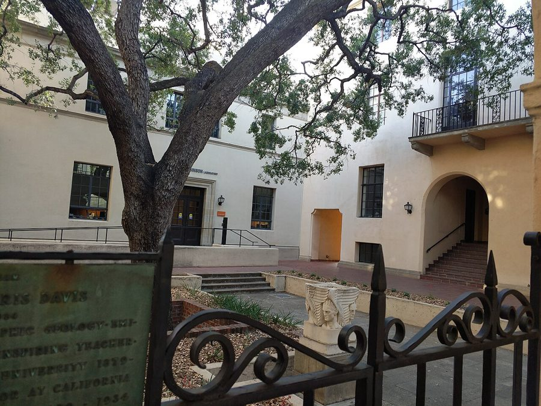
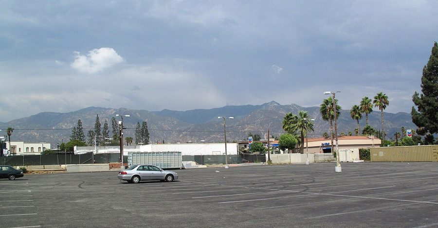
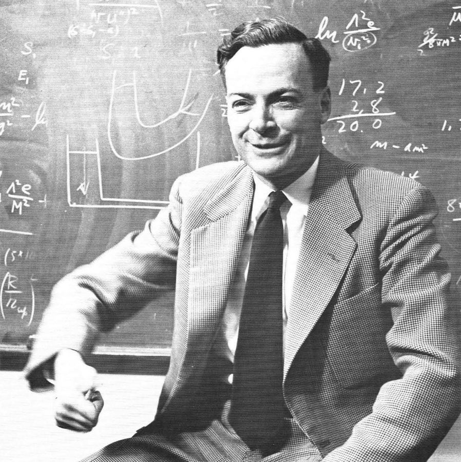
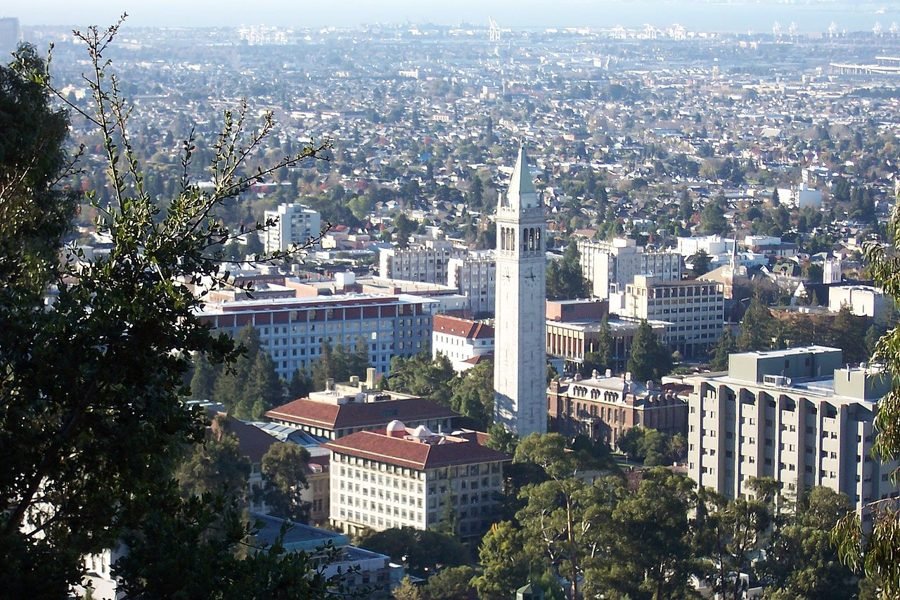

这一章在做什么
开场，写法像电影镜头。前六段用第三人称拍一位带病照常上班的「教授」和他想啃的难题，到第 6 段才点名是费曼。第 7 段镜头切到伯克利的一个年轻人，第 8 段突然改用「我」：那个年轻人就是作者。
读的时候盯住这两次切换，再留意时态在现在时和过去时之间来回跳。

加州理工校园一角。这一章第一句就在写校园：灰色的楼，成排的橄榄树，冬天不烈的太阳。
照片：Boothsift，2018，CC BY-SA 3.0，维基共享资源
约四十年前
费曼寄出带图的论文
1978 年夏
费曼查出癌症
1980 年
伯克利的年轻人寄出论文
1981 年冬
这一章的「现在」
两人在同一条走廊
（中间略）
本站示意图。这一章在四个时间点之间跳，年份都是书里给的。写「现在」用现在时，写往事用过去时或过去完成时。
背景：作者默认你知道的事
南加州的山，冬天才绿

从帕萨迪纳看圣盖博山。照片摄于 9 月，旱季的山是灰褐色的。
照片：Downtowngal，2017，CC BY-SA 4.0，维基共享资源 洛杉矶一带是地中海式气候：夏天几乎不下雨，草晒得枯黄；雨都下在冬天，山反而在冬天转绿。和中国大部分地方正好相反。
所以第 2 段说棕色让位给绿色、冬天更「好客」，费曼数的是自己还能看几轮这样的黄绿交替。
《物理评论》（Physical Review）
美国物理学会办的学术期刊，物理学界分量最重的期刊之一。年轻的费曼把带着小图的论文投到这里。
作者说 1981 年这份期刊里到处是他的图，意思是这套方法已经成了全行业的日常工具。
为什么说他「也许该拿两三个诺贝尔奖」

1959 年的费曼。这时他的图已经传遍物理界，离拿诺贝尔奖还有六年。
作者不详，公有领域，维基共享资源 费曼 1965 年得的诺贝尔奖是因为量子电动力学，和施温格（Julian Schwinger）、朝永振一郎三人分享。
他在别的方向上也做过头等的工作，比如解释液氦的超流、弱相互作用的理论。第 6 段那句话是物理圈里常见的评价，不是作者一个人的吹捧。
伯克利

从山上看加州大学伯克利分校，中间是校园的标志萨瑟塔。
照片：Introvert，2005，CC BY-SA 2.5，维基共享资源 加州大学伯克利分校（UC Berkeley），在旧金山湾区，美国最好的公立大学之一，物理系尤其强。它在帕萨迪纳的北边，开车要五六个小时。
第 7 段的「年轻人」在这里读博士。书里只说 Berkeley，美国读者一看就知道指这所大学。
junior high、gym 和集体淋浴
小学
elementary school
初中
junior high
高中
high school
大学
college
约 12–14 岁
作者想起的那一夜在这里
美国学制（各地分法略有不同）
本站示意图。junior high 相当于初中，现在很多地方改叫 middle school。
gym 在这里是体育课（gym class），不是健身房。那个年代的美国中学，上完体育课男生通常要在更衣室的集体淋浴间里一起洗澡，没有隔间。
对一个刚进青春期、怕被人笑话的孩子，这是件大事。作者拿它来比去加州理工：没处躲，全给人看见。
这一章的物理，先用中文过一遍
第 3 到第 5 段是全章最硬的部分，其实只讲了一件事：费曼的方法在一个理论上大获成功，在另一个理论上卡住了。
原子分两层。外面是电子，靠电磁力绕着原子核转，管这一层的理论叫量子电动力学（quantum electrodynamics，简称 QED）。里面是原子核，质子和中子挤在一起，靠的是另一种强得多的力，叫强力，管它的理论叫量子色动力学（quantum chromodynamics，简称 QCD）。
原子（atomic physics）
原子核放大（nuclear physics）
电子
质子
中子
中子
质子
电子被电磁力拴在核外
理论：QED，算得极准
质子、中子被强力粘在一起
理论：QCD，方程有了，数算不出
本站示意图（不按比例：真实的原子核只有原子的十万分之一大小）。
费曼年轻时发明的那些「古怪的小图」是一套算账的办法：粒子之间每一种可能的相互作用过程画成一张图，每张图对应一个算式，把图加起来就是答案。
电子 电子
电子 电子
光子
两个电子之间传递电磁力
时间
本站示意图：一张最简单的费曼图。两个电子靠近，交换一个光子，互相推开。直线是电子，波浪线是光子。
在 QED 里，图越复杂，贡献越小，算前几张就够准。在 QCD 里，很多情况下复杂的图并不变小，加不完。
用程序员的话说：QCD 的源码写出来了，可是在很多输入上跑不出结果。第 5 段说连质子的质量都算不出来，就是这个意思。费曼晚年想啃的正是这块骨头。
英文 中文 一句话 quantum mechanics 量子力学 描述原子尺度上物质怎么运动的理论。 electromagnetic force 电磁力 带电的东西之间的力。电、磁、光都归它管。 quantum electrodynamics 量子电动力学 电磁力的量子理论，简称 QED。费曼的诺贝尔奖就是因为它。 electron 电子 带负电的轻粒子，在原子核外面。 nucleus 原子核 原子中心又小又重的核。复数 nuclei。 proton / neutron 质子 / 中子 组成原子核的两种粒子。质子带正电，中子不带电。 chemical properties 化学性质 一种原子能和谁结合、怎么反应，由外层电子决定。 spectral properties 光谱性质 一种原子发出、吸收哪些颜色的光。spectral 来自 spectrum（光谱）。 emit / absorb 发射 / 吸收 原子放出光、吃进光。 atomic physics 原子物理 研究核外电子的行为。 nuclear physics 核物理 研究原子核内部。 strong force 强力，强相互作用 把质子、中子粘在核里的力，比电磁力强得多。 quantum chromodynamics 量子色动力学 强力的理论，简称 QCD。chromo 是「颜色」的词根，但这里的「色」只是个借来的名字，和真的颜色无关。 collision 碰撞 把粒子加速后对撞，是研究它们的主要办法。 quantitative / numerical prediction 定量的 / 数值预言 理论给出的具体数字，可以拿去和实验比。 dimension 维度 上下、左右、前后各算一维。作者的论文研究的是无穷多维的空间。
词与短语
词条按在书里出现的顺序排。斜体小字是它所在的那句话里的几个词，方便你在纸质书上找到。
olive tree–lined
… on the olive tree–lined Caltech campus …
两旁种着橄榄树的
名词 + -lined 是固定造词法：路边排着一溜什么。a tree-lined street 是林荫道。
longish
… man with longish hair steps into …
有点长的
形容词加 -ish = 「有点……」「偏……」。tallish 、greenish 同理。
modest
… steps into his modest office. Some …
不起眼的，朴素的
形容东西时不是「谦虚」，是「不大、不讲究」。
on this planet
… students, on this planet less than …
活在这世上
在说年龄：学生活过的年头不到教授的三分之一。带点玩笑的说法，和太空无关。
keep someone away
… nothing could keep him away, especially …
拦着不让某人来
nothing could keep him away = 什么也拦不住他来上班。
the effects of which
… the effects of which he would …
它（手术）的后遗症
which 指前面的 surgery。整句：手术的后遗症，他不肯再让它搅乱自己的日常。routine = 每天固定的那一套。
bathe
… bright sun bathes the palm trees, …
（阳光）洒满，笼罩
本义是给……洗澡。光「浸着」某物是常见的文学用法。
withering
… no longer the withering sun of …
把草木晒蔫的，毒辣的
wither = 枯萎。
give way to
… brown now giving way to green, …
让位给，渐渐变成
不是「给路」。山从枯黄慢慢转绿。
hospitable
… of the more hospitable winter season. …
（气候）宜人的，适合生长的
本义是好客。反义 inhospitable 常用来形容荒凉恶劣的环境。
search the literature
… he had searched the literature. Five-year …
查文献
literature 在学术语境里是「已发表的论文」，不是文学。他是自己去翻医学论文。
virtually
… 10 percent. Virtually no one survived …
几乎
和「虚拟」无关。virtually no one = 几乎没有人。
be into his fourth
… ten years. He was into his fourth. …
他已经进入第四年
fourth 后面省了 year。be into + 序数 = 已经进到第几个。
prestigious
… to the prestigious journal Physical Review. …
声望很高的
名词 prestige。journal 在这里是学术期刊。
formal
… less formal than the standard mathematical …
形式化的，全靠严格数学符号的
不是「正式场合」的正式。less formal 是说他的图更直观，不那么符号化。
as it turned out
… As it turned out, the method …
后来的事实是
turn out = 结果是。第 7 段的 It would turn out that 是同一个短语。
ubiquitous
… his diagrams were ubiquitous. They were …
无处不在的
读作 /juːˈbɪkwɪtəs/。
as famous as diagrams get
… as famous as diagrams get. And …
图能有多出名，它们就有多出名
as + 形容词 + as + 名词 + get = 在这一类东西里已经到顶了。as good as it gets = 好到头了。
work out
… method he worked out in his …
琢磨出来，推导出来
不是「锻炼」。
govern
… electromagnetic force that governs, among other …
支配，决定
物理里常说某个力、某条定律 govern 某种现象。
among other things
… governs, among other things, the behavior …
（它管的事很多）其中之一是
插入语。读的时候先跳过它：governs … the behavior of the electrons 。
impart A to B
… electrons impart to atoms their chemical …
把 A 赋予 B
这句因为 A 太长，语序倒成了 impart to atoms + 一长串 ：这些电子让原子有了化学性质和光谱性质。
be subject to
… protons are subject to the same …
受……作用，受……支配
subject 在这里不是「主题」「科目」。
fittingly
… It is called, fittingly, the …
名副其实地，很贴切地
最强的力就叫「强力」，作者觉得这名字起得省事又贴切。
root
… chromodynamics (despite the root, chromo, it …
词根
不是树根。despite the root = 别看这个词根（是「颜色」的意思）。
in principle
… In principle quantum chromodynamics provided a …
原则上，理论上
这个短语一出现，后面多半跟着「但实际上做不到」。这一段用了两次，都是这个味道。
extract … from
… how do we extract descriptions of …
从……里提取出、榨出
理论只是一组方程，要从里面「榨」出具体的结论和数字，这一步才是难处。
experimentalist
… accurately measured by the experimentalists. …
做实验的物理学家
和同一句里的 theorist（理论物理学家）相对。费曼和作者都是 theorist。
play around with
… he’ll play around with the problem …
摆弄摆弄，玩玩看
故意说得轻描淡写。对费曼来说，做物理就是「玩」，这是全书反复出现的态度。
of its day
… most important of its day. To …
那个时代的
day 指时代，不是某一天。
attack a problem
… years unsuccessfully attacked this problem lacked …
攻一个难题
这句很长，主干是 everyone else … lacked certain qualities ：别的攻过这个问题的人都少了点什么。
oddball
… isn’t sure: an oddball approach, perhaps. …
古怪的，不按常理出牌的
口语词，也可以作名词指怪人。
serve someone well
… they had served him well—he had …
让某人大大受益
不是「服务」。这些特质一路帮了他大忙。
arguably
… but might arguably have deserved two …
可以说，有理由认为
容易反着理解成「有争议地」。它表示「这么说站得住脚」。
there is a catch
… problems, but there was a catch. …
这里头有个坑
catch 作名词：看着挺好的事情里藏着的那个麻烦。
a countless array of
… also a countless array of other …
数不清的一大排
程序员熟悉的 array，本义就是「排开的一大列」。
a beginning faculty appointment
… received a beginning faculty appointment at …
一个初级的教职
appointment 在这里是「任命、职位」，不是「预约」。faculty 是教师队伍，序言里讲过。
half my life earlier
… bed half my life earlier, wondering …
在我年纪只有当时一半的时候
他收到聘书时二十七八岁，往回数一半，是十三四岁。
junior high
… first day in junior high. More …
初中
后面省了 school。
gym
… worried about gym and showering in …
体育课
在学校语境里 gym = gym class，不是健身房。
exposed
… I would be exposed, too, at …
暴露在众人眼前，没处躲
双关：淋浴间里是身体被看光，加州理工是本事被看光。too 把两件事连了起来。
faculty advisor
… be no faculty advisor, no mentor, …
（研究生的）指导教师
mentor 是更宽泛的「带你的前辈」。读博时有导师兜底，到了加州理工就只能靠自己。
the living dead
… one of the living dead. At …
活死人，行尸走肉
the + 形容词 = 一类人。
shun
… would also be shunned, and soon …
躲着，不理睬
被整个圈子冷落。
have it
… Did I have it or didn’t …
有那份本事
it 没有具体所指，就是「做这行需要的那个东西」。和序言里的 have what it takes 是同一个问题。
值得停下来的句子
They were about as famous as diagrams get. And he was about as famous, at least in the world of science, as scientists get.
— 第 3 段。本站译：图能出名到什么程度，这些图就出名到什么程度。科学家能出名到什么程度（至少在科学界），他就出名到什么程度。
两句是同一个句型 as famous as X get ，第二句中间插了一个限定 at least in the world of science 。
这个限定不是客气话：1981 年的费曼在圈外还没什么名气，序言里说过。注意主语一直是 he，全章到这里还没说出他的名字。
To me, a physicist who didn’t produce brilliant ideas was one of the living dead.
— 第 8 段。本站译：在我看来，拿不出漂亮想法的物理学家就是行尸走肉。
主语是 a physicist who … ，谓语是 was 。开头的 To me 很要紧：这是二十多岁的作者当时的看法，一种把人逼到墙角的看法。
全书后面的事，很大一部分是费曼在帮他松开这个念头。
检查一下理解
先在心里答，再点开。答错的那题，回书里把对应段落再读一遍。
1. 前几段的 the professor 是谁？作者在哪里才说出名字？
是费曼。名字到第 6 段才出现，夹在一句话中间。前面一直用「一个瘦瘦的人」「教授」，是故意吊着读者，像电影先拍背影。
2. 第 1 段说学生 on this planet 的时间不到教授的三分之一，是什么意思？
在说年龄。费曼这时 63 岁，学生二十岁上下，活过的年头不到他的三分之一。不是说谁去过别的星球。
3. 第 2 段 He was into his fourth，第四个什么？这句话放在那里想说什么？
确诊后的第四年。前两句刚说五年生存率不到一成、几乎没人活过十年，紧接着这一句：他已经走到第四年，时间不多了。
4. 第 6 段里，费曼确信自己有别人没有的本事吗？
不确信。原文是他「告诉自己」别人缺了点什么，目的是给自己鼓劲；那到底是什么，他自己也说不清，只猜是路子怪。这是自我激励，不是自夸。
5. 第 7 段的 a much younger man 和第 8 段的 I 是什么关系？
同一个人，都是作者。第 7 段他把自己当成镜头里的另一个角色来写，和前面的「教授」对称；第 8 段才换回第一人称。
6. 作者说到加州理工像初中第一天，他怕的到底是什么？
怕被人看穿、被人笑话。读博士时有导师带着，到了这里只剩自己的答案摆在最好的物理学家面前。如果拿不出像样的想法，他认为自己会被冷落，很快丢掉工作。